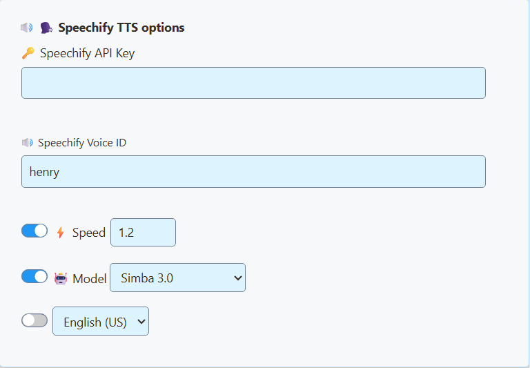

Before you start
Start with chat connected in SSN. If you have not set that up yet, follow the getting-started guide.
You need internet access and a Speechify API account and key. Installing the Speechify reading app alone does not connect it to SSN. Check API access and usage charges in your Speechify account. Chat selected for speech is sent to Speechify.
Get a key · Set up SSN · Change voice · Read faster · OBS audio · Viewer volume · Troubleshooting
1. Get your Speechify API key
- Open the Speechify developer platform and sign in or create an account.
- Open API Keys. Copy an existing key, or create one if needed.
- Keep the key ready to paste into SSN. You do not need to install an SDK or run code.
These account steps follow Speechify's official quickstart.
Keep your key and generated SSN link private. The link can contain your API key. Do not post it in chat or include it in screenshots.
2. Select Speechify in SSN
- Open the desktop app's Sources and Settings, or the SSN extension popup.
- Find Main chat overlay & control dock, then expand Message — Text to Speech. You can also search settings for text to speech.
- Turn on Enable TTS in dock.
- Set TTS Service Provider to Speechify.
- Paste your key into Speechify API Key. For a first English voice, enter
henryin Speechify Voice ID. - Leave Speed at its default for your first test. Leave the optional Model and language switches off; SSN uses Simba 3.0 by default.

{kind=link}

3. Open the updated dock link
- Use copy link beside Main chat overlay & control dock.
- Open that newly copied link in the browser where you want speech to play. If using OBS, follow the next OBS section.
- In a normal browser, click inside the dock once if audio is blocked.
- Send a short message in your own connected chat. Confirm the new message appears and is spoken.
Keep the source connected and the TTS dock open. New eligible messages are read in sequence; filters and TTS controls can exclude messages. Busy chat can build a queue.
After changing voice, speed, or provider, copy the link again. Replace the old URL wherever speech plays. Refreshing a page that still has the old URL can keep the old settings.
Choose another voice
Change Speechify Voice ID, then open the updated dock link. Speechify lists henry, george, carly, and sabrina as built-in examples. Use an exact API voice ID, not just a display name from the reading app.
To find more, use Speechify's Choose a voice instructions. Its voice-list API returns the voices your account can use; copy the selected voice's id into SSN. Match the voice to the model supported by your SSN settings. SSN uses Simba 3.0 by default. For English, you can enable the Model switch and choose Simba 3.2 (English). Keep your chosen voice ID; Henry and Carly were tested with the current models. The legacy models remain available for existing configurations.
Change the settings under Main chat overlay & control dock if that is the page reading chat. Featured Chat and the chat bot have separate TTS settings.
Make it read faster
- Under Speechify TTS Options, turn on the switch beside Speed.
- Try 1.2 as a modest increase from the normal value of 1.0.
- Copy the updated dock link and replace the URL in your browser or OBS source. Compare the same short sentence at both settings.
The switch must be on for the setting to be included in the link. Use 1.0 for normal speed, a higher number for faster speech, or a lower number for slower speech. The supported range is 0.5 to 3.0.
Speaking faster is different from starting sooner. Speed does not remove the time Speechify needs to generate the audio. Shorter messages and turning off username reading can help the queue keep up.
Optional: send Speechify audio through OBS
- In the scene you use for streaming, go to Sources → + → Browser. Name the source SSN Speechify.
- Paste the updated SSN dock link into URL.
- Tick Control audio via OBS, then click OK.
- Send a short chat message and look for movement in that source's Audio Mixer meter.
- Make a short recording and play it back to confirm the voice is in the output.

For audio without visible chat, keep the Browser Source active and position it outside the visible canvas. Do not rely on a source that is shut down when hidden to keep reading.
Want to hear it yourself too? Open Advanced Audio Properties from the Audio Mixer and set that source's Audio Monitoring to Monitor and Output. Avoid Monitor Only (mute output) when viewers should hear it. Avoid capturing the monitoring device a second time.
An OBS custom dock is a control panel. For these instructions, use a Browser Source in your scene. Keep only one copy speaking to avoid doubled voices.
Reference: OBS Browser Source documentation.
Make it louder for viewers
- In SSN's dock TTS settings, enable Volume of speech and set it to 1.0 (100%). Update the dock URL again. If you lowered the dock's own volume slider, turn it back up.
- In OBS, unmute SSN Speechify and raise its mixer fader toward 0.0 dB if it was turned down.
- If it is still too quiet, open that audio source's Filters, add a Gain audio filter, and try a small boost such as +3 dB.
- Record speech alongside your microphone and background audio. Listen back and adjust the balance. Reduce gain if speech distorts or the meter reaches the red end.
SSN's volume stops at 100%; extra boost belongs in your outgoing audio mix. Turning up your headphones alone does not make the stream louder. OBS documents Gain and other audio filters here.
Using another streaming app? Route the TTS audio to an input that app can capture. The setup depends on your operating system and the app's audio controls.
If something does not work
- No text in the dock: fix source capture first. Speechify cannot read messages SSN has not received.
- Still the old voice: check you changed the dock's settings, selected Speechify, and replaced the old URL. Close or mute any other speaking copies.
- Text arrives but no speech: check the TTS switch, API key, account access/usage limits, and voice ID. In a normal browser, click the page once.
- You hear it but viewers do not: check the OBS source meter, mute state, output track, and monitoring mode. Test a recording.
- Echo or repeated speech: leave one TTS page speaking and avoid capturing both its direct output and monitoring audio.
- Speed or model does not change: turn on its switch and copy the updated link. Older SSN settings pages had a bug that could send these controls to the wrong overlay. Reload settings to get the updated controls.
Model unavailable? Select Simba 3.0 or Simba 3.2 and use a voice your Speechify account supports. Speechify is retiring the older English and Multilingual models; see its current model reference.
For help, share your app version, voice ID, what step failed, and whether audio runs in SSApp, a browser, or OBS. Remove API keys and private session links from screenshots.
Back to the general TTS guide · Connect your first chat source